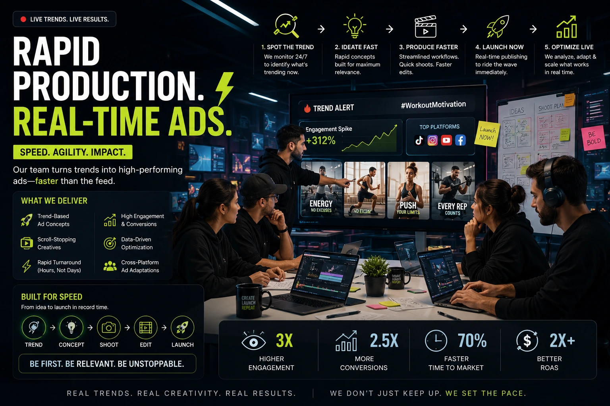
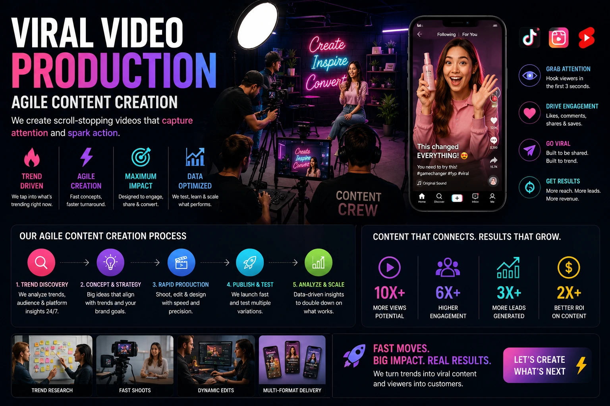

Creating High-Impact Digital Ads at the Speed of Social Trends
The Speed Gap in Digital Advertising
Every brand marketing team has experienced this moment: a trend breaks on social media, the conversation explodes, and by the time the idea is approved, the brief is written, the production is scheduled, and the ad is delivered — the trend is three days old and the audience has moved on. The window of peak cultural attention has closed, and the opportunity to earn organic reach, brand association, and earned media from a cultural moment has passed entirely.
This is the speed gap in digital ad production — the distance between when a brand identifies an opportunity and when it is able to publish a response. For most brands operating with traditional agency and production workflows, this gap is measured in days or weeks. For the brands winning at rapid response marketing in 2026, it is measured in hours. Closing this gap is not just a creative advantage — it is a commercial one. The brands that respond to trending moments relevantly and quickly consistently earn organic reach that paid distribution cannot match.
Why Trending Topic Marketing Works for Indian Brands
India's social media landscape has a unique characteristic that makes trending topic marketing exceptionally powerful: the scale and speed of cultural conversation around cricket, cinema, festivals, and national moments. When India wins a Test series, when a Bollywood film releases, when a major festival approaches, when a cultural moment breaks on X or Instagram — the conversation reaches hundreds of millions of people simultaneously, and the brands that insert themselves relevantly and quickly become part of that conversation at a fraction of the cost of planned media buying.
Real-time social media ads built around trending Indian cultural moments do something that scheduled brand content cannot: they meet the audience where their attention already is, rather than competing for attention against it. A brand that publishes a clever, well-produced response to a trending cricket moment during peak conversation is not interrupting the audience — it is participating in a conversation the audience is already having. This distinction — participation versus interruption — is the difference between content that gets shared and content that gets ignored.
Organic Reach at Scale
Trend-responsive content earns algorithmic amplification across Instagram, X, and YouTube that paid distribution cannot replicate — because the platform is already pushing trend-related content to massive audiences.
Brand Association with Cultural Moments
Brands that respond relevantly to cultural moments build an association with those moments in audience memory — a brand equity effect that compounds across multiple trend responses over time.
Earned Media and Sharing
Viral ad video production that is genuinely funny, surprising, or emotionally resonant within a trending context earns shares, reposts, and media coverage that extends reach far beyond the brand's own following.
Cost Efficiency vs Planned Campaigns
Cost-effective digital ad films produced for trend moments — with streamlined production and pre-built creative infrastructure — consistently deliver higher reach-per-rupee than equivalent planned campaign spend.

The Infrastructure of Agile Content Creation
Agile content creation for brands is not improvisation. It is the opposite: it is a pre-built production infrastructure that enables fast execution when a trend opportunity emerges. The brands that consistently win at rapid response marketing have done the infrastructure work in advance — so that when a trend breaks, the creative and production decisions are already largely made and the team can move directly to execution.
The infrastructure components that enable rapid response marketing at professional production quality:
- Pre-approved visual identity templates. A library of motion graphic templates, lower-third styles, colour treatments, and typography systems — all pre-approved by the brand team — that can be applied to new video content without a design review cycle. When a trend breaks, the visual treatment is already decided. The only creative decision is the specific message and footage.
- Standing production team relationships. A production partner who knows the brand, has access to the visual asset library, and has an agreed rapid-turnaround SLA — not a team that needs to be briefed from scratch every time a trend opportunity emerges.
- Rapid internal approval process. A two to three person creative and legal sign-off that operates within a two-hour window for trend-responsive content. Traditional approval chains that require five stakeholders and forty-eight hours cannot coexist with effective trending topic marketing.
- Pre-agreed content category guidelines. Clear, pre-approved guidelines defining which types of trends the brand will and will not respond to — cultural, sporting, cinematic, political — so that brand safety decisions do not require a new committee meeting every time a trend breaks.
- Multi-format asset production. A production workflow that delivers every piece of trend-responsive content simultaneously in vertical 9:16 for Reels and Stories, square 1:1 for feed posts, and horizontal 16:9 for YouTube — so distribution is not delayed by format reformatting after delivery.
Viral Ad Video Production: What Makes Trend Content Shareable
Viral ad video production is not a formula — but it is also not random. The video content that earns shares, reposts, and earned media coverage in trending moments consistently shares a specific set of creative characteristics that can be planned for and produced intentionally.
The creative characteristics of shareable trend-responsive digital ad production:
- The brand connection is organic, not forced. The worst trend marketing is the brand that inserts itself into a conversation it has no natural connection to. The best is the brand that finds the specific angle of a trending conversation that maps genuinely to its product category, values, or audience. The organic connection is felt immediately by the audience — and the forced connection is equally immediate. If the creative team cannot articulate the organic connection in one sentence, the concept is not ready to produce.
- It delivers one emotion clearly and quickly. Shareability is built on emotional clarity — the video makes the viewer feel one thing clearly and immediately. Humour is the most powerful driver of sharing in trend-responsive content, followed by surprise, then genuine warmth. Mixed emotional signals or overloaded messaging reduces shareability regardless of production quality.
- It respects the viewer's intelligence. The best trend-responsive ads treat the audience as participants in the cultural conversation rather than targets of a brand message. They reference the trend with the assumed knowledge of someone who is already part of the conversation — not with the laboured explanation of someone trying to prove they noticed the trend.
- It is visually complete within the first three seconds. On every platform where real-time social media ads are published, the first three seconds determine whether the viewer watches or scrolls. Trend-responsive content that takes five seconds to establish context loses the audience before the brand message is delivered.
- The brand is present but not dominant. In trend-responsive content, the cultural moment is the hook and the brand is the endorsement. Content that leads with the brand rather than the cultural moment performs like an ad — which gets scrolled past — rather than like cultural participation — which gets shared.

Cost-Effective Digital Ad Films: The Production Model That Works
Cost-effective digital ad films for trend-responsive marketing are produced through a fundamentally different model than traditional campaign advertising. The traditional model — concept development, client presentation, revision, pre-production, shoot, post-production, delivery — operates on timelines of weeks and budgets that reflect that timeline. The trend-responsive model inverts this: production infrastructure built in advance, execution decisions made in hours, delivery measured in a single working day.
The cost efficiency of the rapid response model comes from three sources:
Pre-Built Creative Infrastructure
- Visual templates eliminate design time for each execution
- Pre-approved brand guidelines remove review cycles
- Standing team relationships remove briefing time
- Asset libraries eliminate reshooting standard elements
Streamlined Production Execution
- Single-day shoots with minimal crew and equipment
- Location-flexible production — studio, office, or on-location
- Parallel post-production during shoot review
- Same-day or next-day delivery as the workflow standard
Multi-Platform Asset Efficiency
- One shoot, three format outputs delivered simultaneously
- Vertical, square, and horizontal cuts from single source footage
- Platform-specific caption and audio variants produced in post
- Single production cost amortised across all distribution channels
Brand Safety in Trending Topic Marketing
The speed requirement of trending topic marketing creates a specific brand safety risk that slower production timelines do not: the risk of publishing content that responds to a trend before the full context of that trend is understood. Trends that appear positive or neutral in the first hour of their breaking sometimes reveal a darker or more contested dimension within hours — and a brand that has already published a trend response is now associated with that contested dimension.
Managing brand safety in rapid response marketing requires:
- A two-hour holding period after a trend breaks before committing to a creative response — enough time for the full context of the trend to become clear without losing the production window.
- Pre-agreed category exclusions — topics the brand will never respond to regardless of how culturally prominent they become: political controversies, religious sensitivities, tragedies, and contested social topics.
- A single senior sign-off authority empowered to approve or reject trend-responsive content within a one-hour window — replacing the multi-stakeholder approval chain that cannot operate at trend speed.
- A published-content monitoring protocol — someone responsible for monitoring how a trend evolves after a brand response is published, with the authority to pull content immediately if the trend context shifts in a way that creates brand association risk.
Building a Rapid Response Marketing Calendar
Not all trend opportunities are unpredictable. India's cultural calendar is rich with recurring moments — cricket tournaments, major film releases, festival seasons, annual sporting events — that can be planned for in advance. Agile content creation for brands that operates at its highest efficiency combines reactive trend response for unexpected moments with pre-planned rapid production for predictable cultural moments.
A hybrid digital ad production calendar for Indian brands:
- Planned rapid-production moments: IPL matches, Diwali, Holi, major film releases, Republic Day, Independence Day — cultural moments where the brand can prepare creative concepts and production assets two to four weeks in advance, compressing the execution timeline to hours when the moment arrives.
- Reactive response capacity: A standing production relationship and pre-built creative infrastructure that can activate within four to six hours for genuinely unexpected trend moments — a viral sporting moment, a cultural conversation that breaks unexpectedly, a shared national experience that unites the audience overnight.
- Post-trend amplification: Real-time social media ads that performed well organically should be amplified with paid distribution within 24 hours of publishing — while the trend is still active and the content is still contextually relevant to the audience seeing it in their feed.
Conclusion
The brands winning at digital ad production in 2026 are not the ones with the largest budgets or the most elaborate production pipelines. They are the ones with the most efficient infrastructure — the pre-built creative systems, the standing production relationships, the streamlined approval processes, and the cultural intelligence to identify the right trending moments and respond to them with genuine creative quality before the window of peak attention closes.
Rapid response marketing, viral ad video production, and agile content creation for brands are not separate tactics. They are components of a single production philosophy: that the speed of cultural attention is itself a creative medium, and the brands that can operate at that speed — with quality, with brand safety, and with genuine cultural intelligence — will consistently outperform the ones that cannot.
At The PhD Ads, we build the digital ad production infrastructure for rapid response marketing — from pre-built creative templates and standing production relationships to same-day cost-effective digital ad films delivered across every platform format, built for Indian brands that need to move at the speed of the culture they are part of.
Key Topics
Ready to Produce Digital Ads at Trend Speed?
At The PhD Ads, we specialise in rapid response digital ad production — viral ad video production, real-time social media ads, and cost-effective digital ad films built for Indian brands that need to move at the speed of cultural conversation.
Email: team@e2o.in